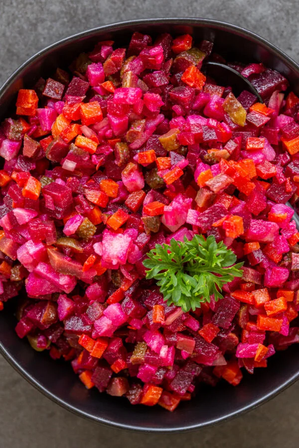

Russian Vinaigrette

Traditional Russian beet salad
Traditional Russian vinaigrette salad, aka Russian beet salad, is made with root vegetables and dressed with sunflower oil.
It’s healthy, guilt-free, and perfect year-round, although it’s typically served during the holidays.
Ingridients
- 3 large carrots
- 2 large potatoes
- 2 beets
- 6 large pickles
- 1 onion purple, yellow or white
- 2 tbsp sunflower oil
- 1 tbsp salt adjust to taste
How to Cook
- Bring a large pot of water to boil.
- Add in carrots, potatoes, and beets.
- Boil for 30 minutes, or until you can pierce the veggies easily with a fork.
- Drain the veggies and set them aside to cool at room temperature.
Note
Potatoes and carrots typically cook faster than beets.
You may need to remove them a little early.
Return to Main Page